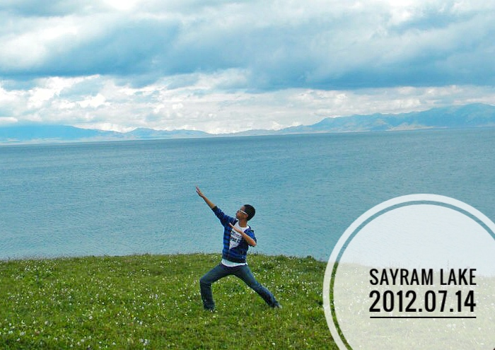
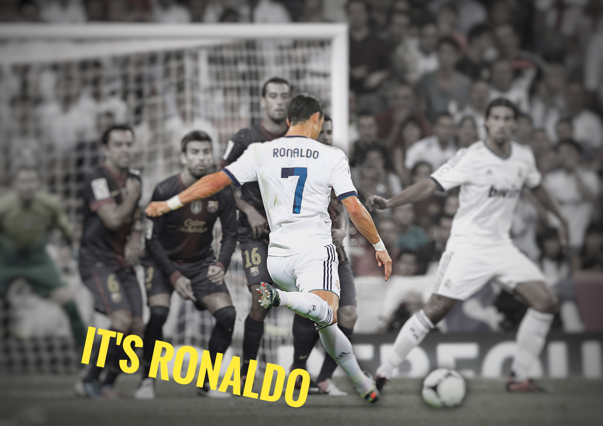
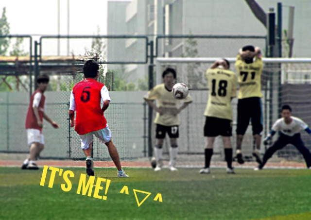

After four years rememberable study in Beihang University, I came to USA keep achieving my dream.
Now I'm 23, full of energy and curiosity, pursuing my master degree in Northeastern University.
Coding
I have great passion for all kinds of things related with Computer technology, and I always want to know how the code runs line by line.
Code output makes me really happy. Now I'm familiar with HTML/JS, C, Python, and I'm working on JAVA. I wish to beautify the world a little with my brain and ten fingers.

Travel
I like trains, I like chatting with new friends, I like photographing the same Moon standing on different places on the Earth.
Traveling around China has been my goal for a long time, and I'm realizing it step by step.

Soccer
I have been watching and playing soccer for more than 10 years, I like the feeling working as a member of a team.
I will keep running on grass until I'm too old to move.


How Well Do You Know Me Quiz
1. Which pet is my favorite?
2. Which team?
3. Who is my favorite singer?
4. Which movie?
5. Bad habit of mine?